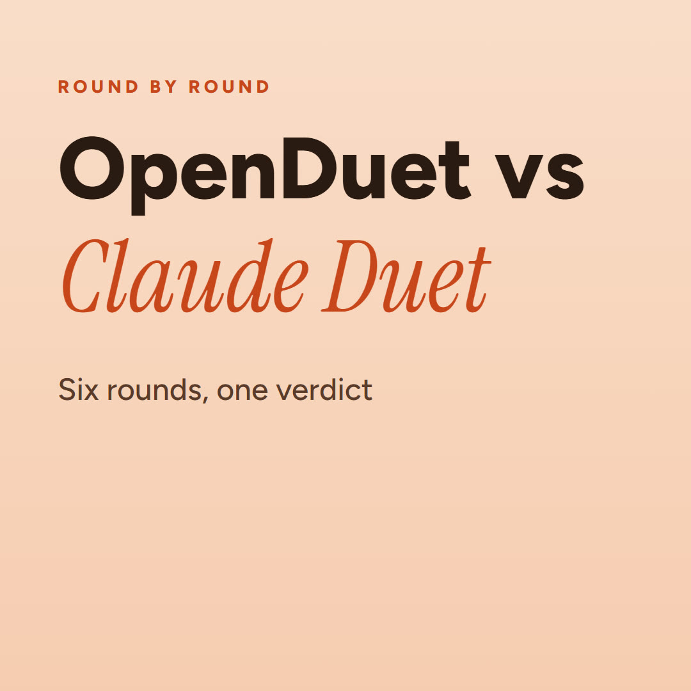

OpenDuet: the setup guide
Run your own proactive AI agent, the open-source take on Claude Duet, on your own computer. For people happy to use a terminal.

Quick start
- Install Docker, Bun 1.3 or newer and Node, and have an OpenAI or Anthropic API key ready.
- Clone the repo, copy
.env.exampleto.env, runbun install, then link a free CopilotKit Intelligence project. - Add your model key to
.env, runbash scripts/start.shand openlocalhost:3010.
What it is
OpenDuet is an open-source proactive agent from CopilotKit, released under the MIT licence. It sends you a morning brief, keeps working in its own browser, files and shell while you are away, and asks before it sends, pays, signs or deletes anything. It is an independent project, not made or endorsed by Anthropic.
Claude Duet is Anthropic's own version: an app on iOS, Android and claude.ai, in a research preview by waitlist for Pro, Max and Ultra users in the US.
Before you start
- Docker, Bun 1.3 or newer, and Node (for
npx, which runs the CopilotKit CLI). - A model key. OpenAI by default (
OPENAI_API_KEY), or Anthropic (ANTHROPIC_API_KEY). - A CopilotKit Intelligence project. Required: it keeps OpenDuet's threads and memory, and the server will not start without its key. The README says the free Developer plan is enough.
- It is early: the README calls it "Early, and in active development".
Step 1: Get the code
Run every command from the repository root.
git clone https://github.com/CopilotKit/OpenDuet.git
cd OpenDuet
cp .env.example .env
bun installStep 2: Link CopilotKit Intelligence
npx --yes copilotkit@latest login
npx --yes copilotkit@latest project select
bun openbot/scripts/setup-learning.tsThe last command copies the project key to INTELLIGENCE_API_KEY in .env, which is the one the server reads.
Step 3: Add your model key
Open .env and add your key. The default Bot runs on OpenAI:
OPENAI_API_KEY=sk-...To use Claude instead, set these in .env:
BOT_PROVIDER=anthropic
ANTHROPIC_API_KEY=...Optionally pick the model with BOT_MODEL, for example BOT_MODEL=claude-sonnet-5-5. Without it the README says the default is claude-sonnet-4-5.
Step 4: Start it
bash scripts/start.shThen open http://localhost:3010 in your browser. Settings → Setup in the app tells you whether your model key works.
To stop it:
bash scripts/stop.shTry these
- Ask the OpenDuet Bot to do something in its own browser, and watch it work on its computer.
- Choose what it must ask you about first in
/settings/approvals. - Ask it to do something on a schedule, then find it in
/routines.
Gotchas
- Port 5432 taken? Set
POSTGRES_PORTin.envto a free port and change the port inDATABASE_URLto match. - Changed
.env? The API reads it only at start: runbash scripts/stop.sh, thenbash scripts/start.sh. - Gmail and Calendar need a Google OAuth client, set up once by an administrator (you, with the default
.env). The README links the Google Cloud steps; a fake Google for testing ships in the repo. - No hosted version yet. The README says no hosted or deploy guide and no OpenDuet image are published, so the Quick start is the supported way to run it today.
- Telemetry: set
COPILOTKIT_TELEMETRY_DISABLED=trueorDO_NOT_TRACK=1to turn it off.
Links
- OpenDuet on GitHub: https://github.com/CopilotKit/OpenDuet
- Introducing Claude Duet (Anthropic): https://claude.com/resources/articles/claude-duet
Save it
- openduet-setup-guide.pdf 309 KB